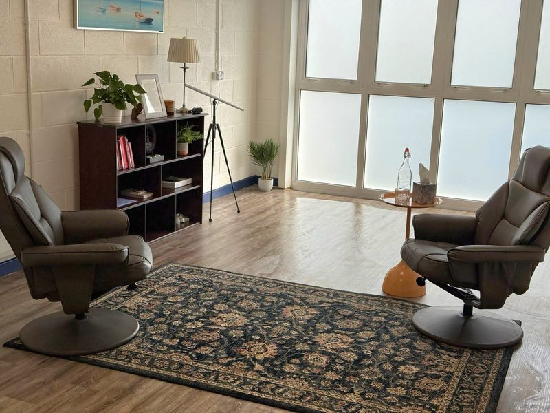

Practical Information
Everything you need to know about sessions, fees, and location
Location & Session Options
Aurelia Bridges Counselling & Psychotherapy
Unit 3, 1-2 Johnstown, Newtown, Waterford, X91 WN1N
The practice is beside John's Bridge, a few minutes from the centre of Waterford city.
Get directions on Google Maps →
There is no parking on site. The nearest public car parks are Waterside Car Park (Waterside, Newtown), about a 6-minute walk, and Tesco Waterford (Bath Street, Manor, X91 W822), about a 5-minute walk.
Opening Hours
| Monday | 10am to 7pm |
|---|---|
| Tuesday | 10am to 7pm |
| Wednesday | 10am to 5pm |
| Thursday | 10am to 7pm |
| Friday | Closed |
| Saturday | Closed |
| Sunday | Closed |
Sessions are by appointment. Please get in touch to arrange a time.

The therapy room, a calm, private space designed for comfort and reflection.
In-Person
Sessions take place in a comfortable, private therapy room at Unit 3, 1-2 Johnstown, Newtown, Waterford.
Online
Secure video sessions available via a confidential platform, from the comfort of your own space.
Telephone
Telephone sessions offer flexibility while maintaining the same quality of therapeutic support.
Session Fees
| Session type | Duration | Fee |
|---|---|---|
| Individual therapy | 60 minutes | €80 |
| Couples & marriage therapy | 60 minutes | €100 |
I have a limited number of reduced-fee spaces available. Please enquire if cost is a barrier to accessing therapy.
Payment can be made by cash, bank transfer, or Revolut.
Please note that while some health insurance providers cover counselling and psychotherapy, it is your responsibility to check your policy and submit any claims directly.
Cancellation Policy
I ask for at least 24 hours' notice if you need to cancel or reschedule a session. Sessions cancelled with less than 24 hours' notice will be charged the full fee.
I understand that emergencies and unforeseen circumstances arise, and I will always try to be flexible and understanding. If something comes up, please let me know as soon as you can.
Accessibility
Getting Here
The practice is beside John's Bridge, close to the centre of Waterford city, and about a 15-minute walk from Waterford Bus Station. There is no parking on site, and the nearest public car parks are a 5 to 6 minute walk away. If getting to the practice is difficult for any reason, please get in touch before your first session.
Neurodiversity
I welcome neurodivergent clients and am happy to discuss any adjustments that might make sessions more comfortable for you.
Online & Telephone
If attending in person is difficult for any reason, online and telephone sessions are available as a fully supported alternative.
Adaptations
If you have any specific needs or would like to discuss accessibility before your first session, please don't hesitate to get in touch.
Confidentiality
Everything you share in therapy is treated with the utmost confidentiality. I adhere to the IACP Code of Ethics regarding confidentiality and data protection.
There are a small number of exceptions where confidentiality may need to be limited:
- If there is a risk of serious harm to you or someone else
- If required by law (e.g., court order)
- In clinical supervision, where your identity is protected
I will explain the limits of confidentiality fully during our first session, so you always know where you stand.
Have More Questions?
If you'd like to know more about sessions, fees, or anything else, please feel free to get in touch.
Contact MeLast reviewed: August 2026